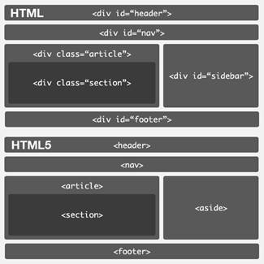

ConceptosHTML5DefiniciónHTML 5 (HyperText Markup Language, versión 5) es la quinta revisión mayor del lenguaje básico de la World Wide Web, HTML. HTML 5 especifica dos variantes de sintaxis para HTML: un «clásico» HTML (text/html), la variante conocida como HTML5 y una variante XHTMLconocida como sintaxis XHTML5 que deberá ser servida como XML (XHTML) (application/xhtml+xml). 1 Esta es la primera vez que HTML y XHTML se han desarrollado en paralelo. CaracterísticasHay que aclarar que HTML5 sigue en borrador y lo seguirá estando durante algunos años más. El enfoque general ha cambiado bastante respecto a versiones anteriores de HTML, añadiendo semántica y accesibilidad implícitas, especificando cada detalle y borrando cualquier ambigüedad. También se tiene en cuenta que muchas páginas web actuales son dinámicas, pareciéndose más a aplicaciones que a documentos. Algo básico es que HTML5 está definido en base al DOM (la representación interna de una web con la que trabaja un navegador), dejando de lado la representación "real", definiendo a la vez un estándar HTML y XHTML. Mejor estructuraEn HTML5 hay varios elementos que sirven para estructurar mejor una página web, estableciendo qué es cada sección, y reemplazando en muchas ocasiones a div.  (“HTML5, estructura básica y elementos semánticos,” 2019)Estos son los elementos: sectionrepresenta una sección "general" dentro de un documento o aplicación, como un capítulo de un libro. Puede contener subsecciones y si lo acompañamos de h1-h6 podemos estructurar mejor toda la página. articlerepresenta un contenido independiente en un documento, el caso más claro son las entradas de un blog o las noticias de un periódico online. Así, dentro de la portada podremos tener varios artículos demarcados semánticamente, por lo que una herramienta puede extraerlos fácilmente. asiderepresenta un contenido que está muy poco relacionado con el resto de la página, como una barra lateral. Esencial para delimitar el contenido "importante" del contenido "de apoyo", haciendo más caso al primero que al segundo. headerrepresenta la cabecera de una sección, y es de suponer que se le dé más importancia que al resto, sobre todo si la sección es un artículo. footerrepresenta el pié de una sección, con información acerca de la página/sección que poco tiene que ver con el contenido de la página, como el autor, el copyright o el año. navrepresenta una sección dedicada a la navegación entre el sitio, como la típica barra superior de los periódicos. Mejores formulariosEl elemento input ha sido ampliado y ahora permite todos estos tipos de datos: datetime, datetime-local, date, month, week, timepara que indicar una fecha/hora. numberque el usuario indique un número. rangepara indicar un rango entre dos números. para indicar un correo electrónico. urlpara indicar una dirección web. searchpara indicar una búsqueda. colorpara indicar un color. Novedades1) El elemento "lienzo" o "Canvas"Este elemento permitirá el renderizado de imágenes y gráficos sin ningún proceso intermedio. Al no depender de nada ni nadie para presentar esta clase de flexibilidad en una página web, las posibilidades tanto de diseño como de interactividad de los usuarios con la página que visitan es sencillamente enorme. 2) Caché para aplicaciones.Aplicaciones web enteras pueden ser guardadas y utilizadas de forma local cuando no hay una conexión a Internet, al igual que toda la información que haya sido guardada o generada a través de dichas aplicaciones. 3) Localización geográfica.HTML 5 tendrá la capacidad de determinar con un alto grado de precisión la ubicación geográfica del usuario. Esto se haría principalmente en páginas que, a partir de la posición actual del usuario, pueden ofrecer diferentes clases de servicios relacionados con el área en cuestión 4) "Operarios Web".habilitan la posibilidad de realizar procesamiento paralelo en segundo plano, mientras que la página web mantiene su rendimiento intacto. Las páginas web siempre han demostrado cierta tendencia lineal a la hora de cargarse, pero con HTML 5, aquellas aplicaciones y sitios que dependan de una gran cantidad de código, podrán ejecutarse de forma más eficiente, y sin afectar el rendimiento del navegador. 5) El elemento "Video".Sin lugar a dudas, la mejora más importante que incorpora HTML 5, y la que más revuelo está provocando entre los medios. El elemento de vídeo incorporado en HTML 5 es la forma definitiva de rebelión, ya que se pueden reproducir vídeos en Internet y embeberlos en páginas sin la necesidad de un plugin. |